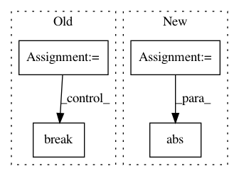

00726c8b57ad409363ede0e754c0137d3fcc71cc,chapter04/gamblers_problem.py,,figure_4_3,#,23
Before Change
action_returns.append(
HEAD_PROB * state_value[state + action] + (1 - HEAD_PROB) * state_value[state - action])
new_value = np.max(action_returns)
delta += np.abs(state_value[state] - new_value)
// update state value
state_value[state] = new_value
if delta < 1e-9:
break
// compute the optimal policy
policy = np.zeros(GOAL + 1)
for state in STATES[1:GOAL]:
After Change
// value iteration
while True:
old_state_value = state_value.copy()
sweeps_history.append(old_state_value)
for state in STATES[1:GOAL]:
// get possilbe actions for current state
actions = np.arange(min(state, GOAL - state) + 1)
action_returns = []
for action in actions:
action_returns.append(
HEAD_PROB * state_value[state + action] + (1 - HEAD_PROB) * state_value[state - action])
new_value = np.max(action_returns)
state_value[state] = new_value
delta = abs(state_value - old_state_value).max()
if delta < 1e-9:
sweeps_history.append(state_value)
break
In pattern: SUPERPATTERN
Frequency: 3
Non-data size: 4
Instances
Project Name: ShangtongZhang/reinforcement-learning-an-introduction
Commit Name: 00726c8b57ad409363ede0e754c0137d3fcc71cc
Time: 2019-06-12
Author: wlbksy@126.com
File Name: chapter04/gamblers_problem.py
Class Name:
Method Name: figure_4_3
Project Name: nilearn/nilearn
Commit Name: dd7c34ea3480f2ffd8843171676aaa22b1777bd8
Time: 2014-05-28
Author: bertrand.thirion@inria.fr
File Name: nilearn/decomposition/tests/test_canica.py
Class Name:
Method Name: test_canica_square_img
Project Name: studioml/studio
Commit Name: 5064e583f4d372e3a4038df3123efe454d34fd7d
Time: 2018-06-29
Author: karlmutch@users.noreply.github.com
File Name: studio/rabbit_queue.py
Class Name: RMQueue
Method Name: enqueue